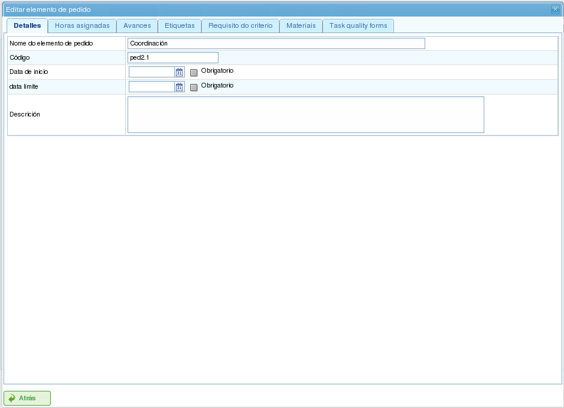
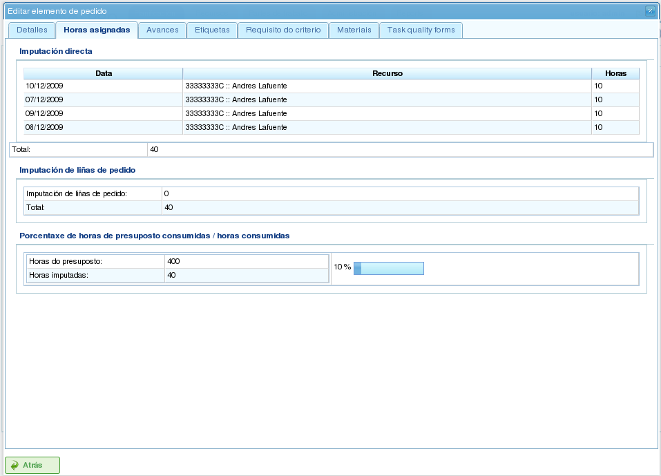
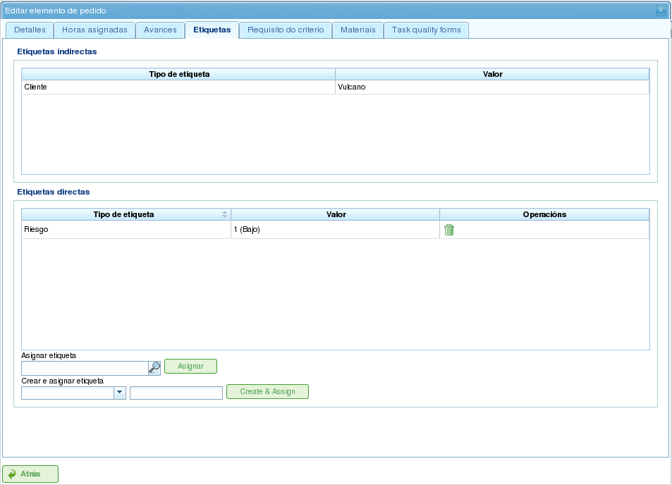
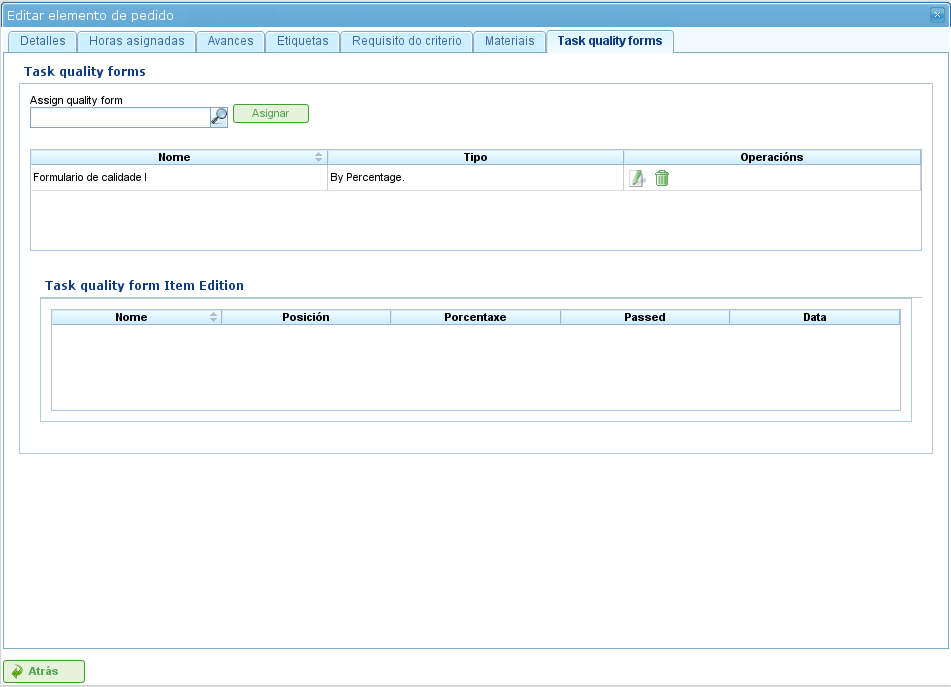

项目与项目元素
项目代表程序用户要执行的工作。每个项目对应公司将提供给其客户的一个项目。
项目由一个或多个项目元素组成。每个项目元素代表要完成的工作的特定部分，并定义项目上的工作应如何规划和执行。项目元素按层次结构组织，对层次结构的深度没有限制。这种层次结构允许继承某些功能，例如标签。
以下各节描述用户可以对项目和项目元素执行的操作。
项目
项目代表客户向公司请求的项目或工作。项目在公司的规划中识别项目。与全面管理程序不同，LibrePlan 只需要项目的某些关键详细信息。这些详细信息包括：
- 项目名称： 项目的名称。
- 项目代码： 项目的唯一代码。
- 项目总金额： 项目的总财务价值。
- 估计开始日期： 项目的计划开始日期。
- 结束日期： 项目的计划完成日期。
- 负责人： 负责项目的个人。
- 描述： 项目的描述。
- 分配的日历： 与项目相关联的日历。
- 自动生成代码： 指示系统自动为项目元素和工时组生成代码的设置。
- 依赖关系和限制之间的优先顺序： 用户可以选择在发生冲突时依赖关系或限制哪个优先。
但是，完整的项目还包括其他相关实体：
- 分配给项目的工时： 分配给项目的总工时。
- 归因于项目的进度： 项目上取得的进度。
- 标签： 分配给项目的标签。
- 分配给项目的标准： 与项目相关联的标准。
- 材料： 项目所需的材料。
- 质量表单： 与项目相关联的质量表单。
创建或编辑项目可以从程序中的多个位置完成：
- 从公司概览中的「项目列表」：
- 编辑： 在所需项目上点击编辑按钮。
- 创建： 点击「新项目」。
- 从甘特图中的项目： 切换至项目详细信息视图。
编辑项目时，用户可以访问以下选项卡：
编辑项目详细信息： 此界面允许用户编辑基本项目详细信息：
- 名称
- 代码
- 估计开始日期
- 结束日期
- 负责人
- 客户
- 描述

编辑项目
项目元素列表： 此界面允许用户对项目元素执行多项操作：
- 创建新的项目元素。
- 在层次结构中将项目元素提升一个层级。
- 在层次结构中将项目元素降低一个层级。
- 缩进项目元素（在层次结构中向下移动）。
- 取消缩进项目元素（在层次结构中向上移动）。
- 筛选项目元素。
- 删除项目元素。
- 通过拖放在层次结构中移动元素。

项目元素列表
分配的工时： 此界面显示归因于项目的总工时，将项目元素中输入的工时进行分组。

按员工分配归因于项目的工时
进度： 此界面允许用户为项目分配进度类型并输入进度测量值。请参阅「进度」部分以了解更多详情。
标签： 此界面允许用户为项目分配标签，并查看之前分配的直接和间接标签。请参阅以下关于编辑项目元素的部分，以了解标签管理的详细说明。

项目标签
标准： 此界面允许用户分配将适用于项目内所有任务的标准。这些标准将自动应用于所有项目元素，但已明确无效的那些元素除外。项目元素的工时组（按标准分组）也可以查看，让用户能够识别项目所需的标准。

项目标准
材料： 此界面允许用户为项目分配材料。材料可以从程序中的可用材料类别中选择。材料的管理方式如下：
- 选择界面底部的「搜索材料」选项卡。
- 输入文字以搜索材料，或选择您要查找材料的类别。
- 系统筛选结果。
- 选择所需材料（可以按住「Ctrl」键选择多个材料）。
- 点击「指定」。
- 系统显示已分配给项目的材料列表。
- 选择要分配给项目的单位和状态。
- 点击「保存」或「保存并继续」。
- 要管理材料的收货情况，请点击「分割」以更改部分材料数量的状态。

与项目相关联的材料
质量： 用户可以为项目分配质量表单。然后完成此表单以确保执行与项目相关联的某些活动。请参阅以下关于编辑项目元素的部分，以了解管理质量表单的详情。

与项目相关联的质量表单
编辑项目元素
项目元素通过点击编辑图标从「项目元素列表」选项卡进行编辑。这将打开一个新界面，用户可以在其中：
- 编辑项目元素的信息。
- 查看归因于项目元素的工时。
- 管理项目元素的进度。
- 管理项目标签。
- 管理项目元素所需的标准。
- 管理材料。
- 管理质量表单。
以下各节详细描述这些操作中的每一个。
编辑项目元素的信息
编辑项目元素的信息包括修改以下详细信息：
项目元素名称： 项目元素的名称。
项目元素代码： 项目元素的唯一代码。
开始日期： 项目元素的计划开始日期。
估计结束日期： 项目元素的计划完成日期。
总工时： 分配给项目元素的总工时。这些工时可以从添加的工时组计算，也可以直接输入。如果直接输入，工时必须在工时组之间分配，如果百分比与初始百分比不匹配，则需要创建新的工时组。
工时组： 可以向项目元素添加一个或多个工时组。**这些工时组的目的**是定义将被分配执行工作的资源要求。
标准： 可以添加必须满足的标准，以启用项目元素的通用分配。

编辑项目元素
查看归因于项目元素的工时
「分配工时」选项卡允许用户查看与项目元素相关联的工作报告，并查看估计工时中已完成的数量。

分配给项目元素的工时
界面分为两部分：
- 工作报告列表： 用户可以查看与项目元素相关联的工作报告列表，包括日期和时间、资源以及用于任务的工时数。
- 估计工时的使用情况： 系统计算用于任务的总工时，并将其与估计工时进行比较。
管理项目元素的进度
输入进度类型和管理项目元素进度在「进度」章节中描述。
管理项目标签
如标签章节所述，标签允许用户对项目元素进行分类。这使用户能够根据这些标签对规划或项目信息进行分组。
用户可以直接将标签分配给项目元素，或分配给层次结构中较高层级的项目元素。使用任一方法分配标签后，项目元素和相关规划任务都会与标签相关联，并可用于后续筛选。

为项目元素分配标签
如图所示，用户可以从 标签 选项卡执行以下操作：
- 查看继承的标签： 查看与项目元素相关联的标签，这些标签是从较高层级的项目元素继承的。与每个项目元素相关联的规划任务具有相同的相关标签。
- 查看直接分配的标签： 查看使用较低层级标签的分配表单直接与项目元素相关联的标签。
- 分配现有标签： 在直接标签列表下方的表单中搜索可用标签来分配标签。要搜索标签，请点击放大镜图标，或在文字框中输入标签的前几个字母以显示可用选项。
- 创建并分配新标签： 从此表单创建与现有标签类型相关联的新标签。为此，选择一个标签类型并输入所选类型的标签值。点击「创建并分配」时，系统自动创建标签并将其分配给项目元素。
管理项目元素和工时组所需的标准
项目和项目元素都可以分配必须满足才能执行工作的标准。标准可以是直接的或间接的：
- 直接标准： 这些是直接分配给项目元素的标准。它们是项目元素上的工时组所需的标准。
- 间接标准： 这些是分配给层次结构中较高层级项目元素的标准，并由正在编辑的元素继承。
除了所需标准外，还可以定义作为项目元素一部分的一个或多个工时组。这取决于项目元素是否包含其他项目元素作为子节点，或者它是否是叶节点。在第一种情况下，只能查看工时和工时组的信息。但是，叶节点可以编辑。叶节点的工作方式如下：
- 系统创建一个与项目元素相关联的默认工时组。工时组可以修改的详细信息包括：
- 代码： 工时组的代码（如果不是自动生成的）。
- 标准类型： 用户可以选择分配机器或员工标准。
- 工时数： 工时组中的工时数。
- 标准列表： 要应用于工时组的标准。要添加新标准，请点击「添加标准」并从点击按钮后出现的搜索引擎中选择一个。
- 用户可以添加具有与之前工时组不同特性的新工时组。例如，一个项目元素可能需要焊接工（30 小时）和油漆工（40 小时）。

为项目元素分配标准
管理材料
材料在项目中以与每个项目元素或项目相关联的列表进行管理。材料列表包含以下字段：
- 代码： 材料代码。
- 日期： 与材料相关联的日期。
- 单位： 所需单位数。
- 单位类型： 用于衡量材料的单位类型。
- 单位价格： 每单位价格。
- 总价格： 总价格（通过将单位价格乘以单位数计算）。
- 类别： 材料所属的类别。
- 状态： 材料的状态（例如，已收到、已请求、待处理、处理中、已取消）。
使用材料的步骤如下：
- 在项目元素上选择「材料」选项卡。
- 系统显示两个子选项卡：「材料」和「搜索材料」。
- 如果项目元素没有分配材料，第一个选项卡将为空。
- 点击窗口左下部分的「搜索材料」。
- 系统显示可用类别和相关材料的列表。

搜索材料
- 选择类别以细化材料搜索。
- 系统显示属于所选类别的材料。
- 从材料列表中，选择要分配给项目元素的材料。
- 点击「指定」。
- 系统在「材料」选项卡上显示选定的材料列表，并提供新的字段供完成。

为项目元素分配材料
- 选择分配材料的单位、状态和日期。
对于后续的材料监控，可以更改一组已收到材料单位的状态。操作如下：
- 点击材料列表中每行右侧的「分割」按钮。
- 选择将行分割成的单位数。
- 程序显示两行，材料已被分割。
- 更改包含材料的行的状态。
使用此分割工具的优点是能够接收材料的部分交货，而无需等待整个交货才能将其标记为已收到。
管理质量表单
某些项目元素需要认证某些任务已完成，才能将其标记为完成。这就是程序具有质量表单的原因，质量表单由一份问题列表组成，如果答案为肯定则认为这些问题很重要。
重要的是要注意，质量表单必须事先创建才能分配给项目元素。
要管理质量表单：
前往「质量表单」选项卡。

为项目元素分配质量表单
程序有一个质量表单搜索引擎。有两种类型的质量表单：按元素或按百分比。
- 元素： 每个元素是独立的。
- 百分比： 每个问题将项目元素的进度增加一个百分比。这些百分比必须能够加起来达到 100%。
选择在管理界面中创建的其中一个表单，然后点击「指定」。
程序从分配给项目元素的表单列表中分配所选表单。
点击项目元素上的「编辑」按钮。
程序在下方列表中显示质量表单的问题。
将已完成的问题标记为已达成。
- 如果质量表单基于百分比，则问题按顺序回答。
- 如果质量表单基于元素，则问题可以以任何顺序回答。